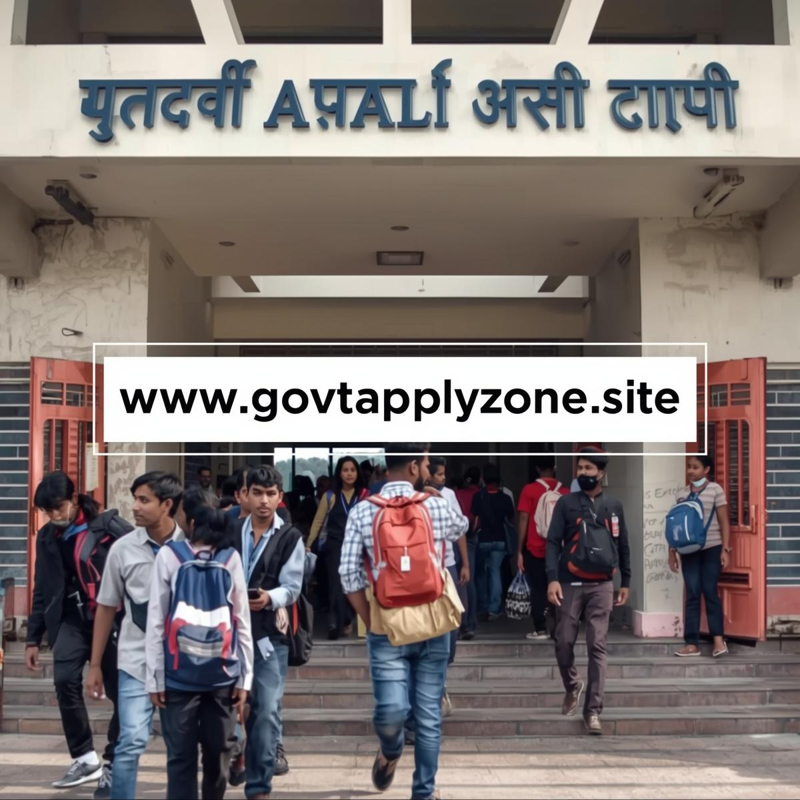

Latest Updates – BPSSC SI 2025

Official Notification Released
15 Nov 2025
BPSSC released the SI 2025 official notification including eligibility, PET standards, exam pattern & vacancies.

Application Window Open
16 Nov 2025
Online registration active for 20+ days. Upload photo, sign and documents carefully.

Admit Card Soon
Expected Jan 2026
Prelims admit card will be released 10–12 days before exam. Check centre city info.

Exam Centre Guidelines
Important
Reach 60 minutes early; carry Aadhar/ID, printed admit card, and follow biometrics instructions.
About BPSSC SI 2025
BPSSC conducts Bihar Police Sub Inspector (Daroga) recruitment for law enforcement, crime investigation, public safety & field administration duties. SI is one of the most reputed field-level officer posts in Bihar Police.
Selection includes Prelims → Mains → PET/PST → Medical → Document Verification.
Syllabus & Exam Pattern
BPSSC SI Prelims (200 Marks)
- General Studies (History, Polity, Economy, Geography)
- Current Affairs (National + Bihar Specific)
- General Science
- Reasoning & Mental Ability
BPSSC SI Mains
- Paper 1: General Hindi (Qualifying, 30% minimum)
- Paper 2: General Studies + Law Awareness + Reasoning
Physical Test (PET/ST)
Final selection heavily depends on PET scores.
- Male Running: 1 mile (6 min 30 sec)
- Female Running: 1 km (6 min)
- High Jump: Male 4 ft • Female 3 ft
- Long Jump: Male 12 ft • Female 9 ft
- Shot Put: Male 16 lbs • Female 12 lbs
Eligibility (BPSSC SI)
- Indian Citizen (Bihar domicile rules apply)
- Graduation in any discipline
- Age Limit: 20–37 years (UR Male)
- Category relaxation applicable
Exam Centres
BPSSC SI exam centres include Patna, Muzaffarpur, Gaya, Bhagalpur, Darbhanga, Purnea, and more.
Stages
Mains Marks
Physical Test
Merit List
Preparation Strategy
Prelims
- Daily current affairs (Bihar + India)
- Polity, History, Geography from NCERT + state books
- Practice reasoning & math daily
Mains
- Focus on descriptive GS answers
- Improve Hindi writing for Paper 1
- Law awareness: IPC, CrPC basics
PET
- Start running practice early
- Focus on stamina + strength training
- Track personal timings weekly
Cutoff (Previous Years)
| Category | 2024 | 2023 |
|---|---|---|
| General | 145 | 139 |
| OBC | 137 | 132 |
| SC | 123 | 118 |
Frequently Asked Questions
Q. Bihar SI posts kaun-kaun se hote hain?
A. Sub Inspector, Platoon Commander, Company Commander etc.
Q. PET important hai?
A. Yes — final merit PET + Mains marks par depend karta hai.
Q. Hindi paper qualifying hota hai?
A. Haan — Paper 1 Hindi qualifying (30% minimum).